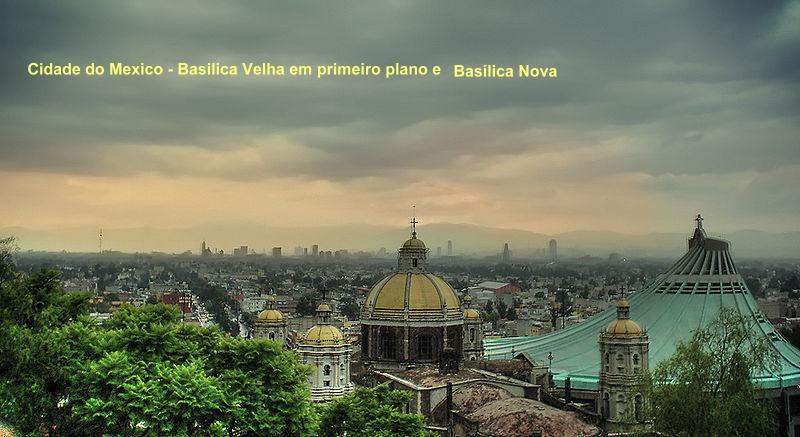

ÚLTIMOS ACONTECIMENTOS
TINHAM QUE TRADUZIR O NOME DA VIRGEM
O nome escolhido pela MÃE DE DEUS: A PERFEITA VIRGEM SANTA MARIA “CUAUHTLAPCUPEUH” (que significa: “Aquela que vem voando da região da luz e da música, entoando um canto, como a águia de fogo, o Sol”), intrigava não apenas ao senhor Bispo, mas aos Padres em geral e aos espanhóis. Em todo caso, era algo muito parecido com “GUADALUPE”, que lembrava um povoado da região de Castela, na Espanha, onde NOSSA SENHORA era venerada com o titulo de NOSSA SENHORA DE GUADALUPE. Todavia, era importante ter presente, no caso, que se tratava da MÃE DE NOSSO SENHOR e do modelo da imagem que Ela Mesma escolheu e apresentou. E por isso mesmo, como não se conseguisse pronunciar todo aquele nome, ao se dirigir a Ela ficou suficiente chamá-la de minha “MÃE”. A questão da pronúncia do nome é secundária, pois depende unicamente do modo de falar de cada pessoa, assim como do conhecimento que tiver do idioma “náhuati” para pronunciar corretamente. Por essa razão, a VIRGEM do “Tepeyac” passou a ser invocada pela cristandade pelo nome de “A PERFEITA VIRGEM SANTA MARIA DE GUADALUPE”, ou simplesmente “SANTA MARIA DE GUADALUPE”, ou “NOSSA SENHORA DE GUADALUPE”.
SANTA MARIA DE GUADALUPE passou a ser venerada na Catedral, enquanto se construía a “sua casinha” no alto da “Colina Tepeyac”. Terminada a construção da “ermida”, as mulheres trouxeram flores e enfeitaram todo o pequeno templo, de uma maneira bem carinhosa e os homens, com suas ferramentas, exaustivamente completaram um magnífico acesso a nova “Casa da VIRGEM”. No dia seguinte ao Natal, depois da celebração da Santa Missa na Igreja Maior (Catedral), foi transladado o manto indígena com a preciosa imagem da MÃE DE DEUS, para a sua “casinha” no “Tepeyac”. Desta vez, na procissão tomou parte à cidade inteira, e também, todos os índios, os quais deixaram as suas aldeias, e juntos, o povo de DEUS, imbuído do mesmo sentimento amoroso e filial, caminhavam vestidos com suas melhores indumentárias, coloridas, enfeitadas, tanto os pobres “náhuas”, como os espanhóis. Do mesmo modo, com o melhor vestuário, os sacerdotes com a sobrepeliz e o senhor Bispo com Capa Magna, mitra e báculo, caminhavam para fazer a consagração da Nova Igreja. Cantando alegremente e rezando com devoção chegaram ao alto da colina, onde o manto com a imagem da VIRGEM assumiu o seu lugar na Sua pequena Ermida, conforme a Santíssima Vontade da MÃE DE DEUS.
FINAL DA HISTÓRIA
Juan Diego não demorou a mudar para a colina “Tepeyac”, e lá ficou vivendo numa pequena cabana que construíram. Sua esposa já tinha falecido em 1529. Ali ele rezava, aconselhava as pessoas, descrevia minuciosamente as Aparições da VIRGEM, assim como todos os acontecimentos que antecederam e os que sucederam as Aparições da Senhora do Céu. E assim permaneceu até a idade de 74 anos, quando faleceu, entrando definitivamente na tão desejada Terra Celestial. Seu corpo foi sepultado junto a Ermida de NOSSA SENHORA, aonde era venerado pelos fieis. O seu tio Juan Bernardino já tinha falecido em 1544, na sua aldeia, onde foi sepultado e venerado como um Santo. E no mesmo ano de 1548, também faleceu o terceiro Juan, o senhor Bispo Dom Juan de Zumárraga, que era um dos principais devotos e defensores de NOSSA SENHORA DE GUADALUPE.
O NOVO BISPO
O sucessor de Dom Zumárraga teve o mesmo carinho e os mesmos cuidados com a Ermida. Em 1557, ampliou-a e adornou-a, transformando-a em Igreja. No ano de 1666, o Papa Alexandre VII, ordenou uma investigação rigorosa sobre o fato, tendo duas autoridades religiosas do Vaticano visitado a aldeia dos índios, e interrogaram oito índios com idade entre 85 e 115 anos, buscando esclarecimentos sobre os fatos acontecidos e a vida de Juan. Concluída a investigação com pleno êxito, em 1754 o Papa aprovou e instituiu a festa Litúrgica Oficial em honra a NOSSA SENHORA DE GUADALUPE, no dia 12 de Dezembro, que corresponde a data em que a VIRGEM apareceu no manto (tilma) de Juan Diego, em 1531. Em 1709, uma Basílica foi construída no local, e finalmente em 1976, para atender a notável demanda de doze milhões de peregrinos por ano, foi inaugurada a atual Basílica, com capacidade para 10 mil pessoas, tendo na frente uma esplanada com capacidade para acolher mais de 30.000 pessoas.
Assim, a VIRGEM DE GUADALUPE passou a ser considerada como “Padroeira do México”, e depois da independência mexicana, foi se tornando, padroeira dos demais povos das Américas, e foi aclamada pelo Papa João XXIII, como a “MÃE DA AMÉRICA”.
BEATIFICAÇÃO DO ÍNDIO
Juan Diego nasceu no ano de 1474 e faleceu com 74 anos de idade, em 1548. Foi Beatificado pelo Papa João Paulo II, no Vaticano, no dia 6 de Maio de 1990.
PESQUISAS NOS OLHOS DA VIRGEM E NO MANTO
Têm sido realizados estudos e pesquisas na imagem de NOSSA SENHORA que ficou impressa no manto do índio Juan Diego. Os pesquisadores, sempre acreditaram que, como a imagem foi tecida e pintada pela MÃE, à misteriosa beleza que o manto revela, bem poderia esconder mais alguma surpresa aos seus filhos. Desse modo, tem sido feito pesquisas e estudos sobre as estrelinhas no manto da VIRGEM, sobre a Lua e o Índio Guerreiro sob os pés da SANTÍSSIMA MÃE, assim como observações e ampliações na face da imagem e nos dois olhos da SENHORA DO CÉU.
Principalmente no caso dos olhos, os pesquisadores encontraram com razoável nitidez, contornos que delineavam a forma e fisionomia humana, refletida nos olhos de NOSSA SENHORA. O primeiro anúncio sobre este fato foi feito em 1929, pelo fotógrafo Alfonso Marcué Gonzalez, que ampliou dez vezes a imagem da face, e descobriu uma figura humana minúscula no olho direito da SANTA MÃE.
Em 1979, Dr. José AsteTonsmann, engenheiro de sistemas da Universidade de Cornell nos USA, especialista da IBM no processamento digital de imagens, anunciou que aumentando cinquenta vezes a face de NOSSA SENHORA, descobriu quatro figuras humanas, aparentemente refletidas em ambos os olhos da VIRGEM. Foi usada uma técnica sofisticada de processamento de imagem com digitalização fotográfica, de ambos os olhos.
Em consequência das imagens publicadas, foram reconhecidas as fisionomias do senhor Bispo Dom Juan de Zumárraga, o tradutor do idioma índio Juan Gonçalves, outro funcionário da Diocese e um provável reflexo da imagem de Juan Diego.
Todos estes estudos são válidos, e funcionam como elementos coadjuvantes confirmando os sinais visíveis e reais que aconteceram, programados e concedidos pela MÃE DE DEUS, a fim de provar a Sua Presença na colina “Tepeyac”.
A física moderna comprova que os olhos humanos podem refletir uma ou mais imagens dentro do campo visual, que esteja sendo apreciada pela visão de uma pessoa. Então a descoberta dos pesquisadores tem um valor incomensurável, porque assim sendo, são na verdade, imagens das preciosas testemunhas oculares, de um fato admirável e inesquecível, acontecido há 480 anos passado.
IMAGENS DO SANTUÁRIO DE NOSSA SENHORA DE GUADALUPE
